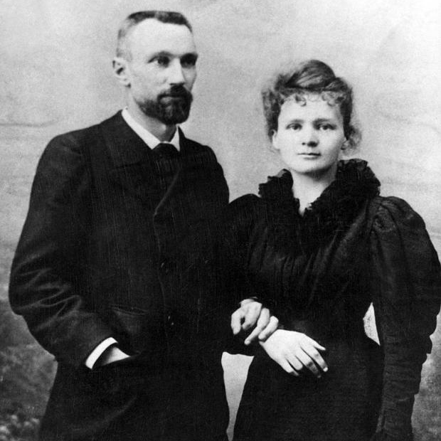

The Curie family made some of the greatest contributions to science and the name is synonymous with Nobel prizes (the family has won 5 Nobel prizes in the sciences and even peace). Pierre Curie won the 1903 Nobel prize in Physics, Marie Curie shared the 1903 Nobel prize in Physics with her husband and Henri Becquerel and the 1911 Nobel prize in Chemistry (she is the only person ever to receive two Nobel prizes in two subjects), their daughter Irene Joliot-Curie and their son-in-law Frederic Joliot-Curie shared the 1935 Nobel prize in Chemistry, and finally their other son-in-law Henry Labouisse accepted the 1965 Nobel Peace prize on UNICEF's behalf. I will specifically be talking about Pierre and Marie Curie and their discoveries.
After learning about Henri Becquerel's discovery that if you leave a piece of Uranium ore on photographic film in a closed drawer you will see that the film has an imprint. This peaked the curiosity of the Curies and so they ordered tonnes of pitchblend, a radioactive ore that came from a mine in Austro-Hungary. After extracting through the tonnes of the stuff, they found a sample of a new element that was the just a fraction of a gramme in mass. They called it "Radium" after the phenomenon of radioactivity, they also discovered a second element with they names Polonium after Marie's native country of Poland. The 1903 Nobel prize in Physics was originally only intended for Henri Becquerel and Pierre Curie "in recognition of the extraordinary services they have rendered by their joint researches on the radiation phenomena discovered by Professor Henri Becquerel." But once Pierre heard that his wife's contribution to physics was not being recognized, Pierre complained to the Nobel comitee's for their unjust decision to leave her out of recieving the prize. The comitee soon added her to the nomination and Marie became the first woman in history to be awarded a Nobel prize.
In 1906, Pierre was instantly killed by a horse-drawn vehicle that fell under its wheel and crushed his skull. After her husband's death, Marie was offered her husband's position as a professor of physics at the University of Paris. She bacame the first woman to become a professor at the university. She later recieved the 1911 Nobel prize in Chemistry "in recognition of her services to the advancement of chemistry by the discovery of the elements radium and polonium, by the isolation of radium and the study of the nature and compounds of this remarkable element."